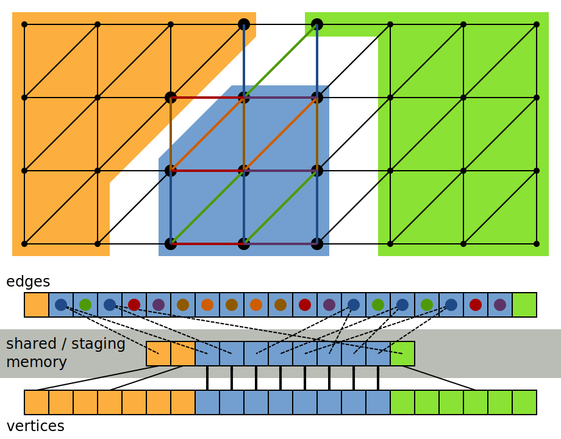
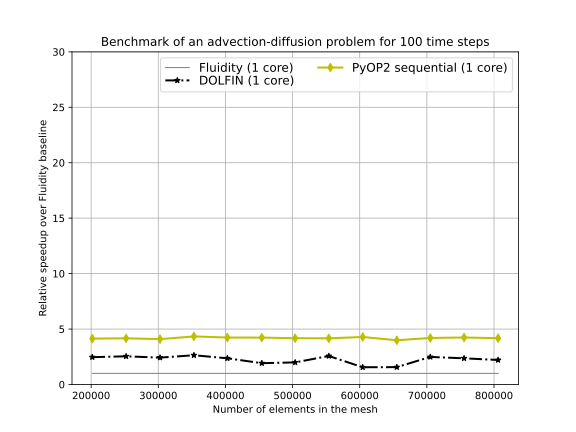

PyOP2: a Framework for Performance-Portable Unstructured Mesh-based Simulations and its Application to Finite-Element Computations
Florian Rathgeber1, Graham Markall1, Lawrence Mitchell3, Nicolas Loriant1, David Ham1,2, Gheorghe-teodor Bercea1, Fabio Luporini1, Paul Kelly1
1 Department of Computing, Imperial College London
2 Grantham Institute for Climate Change, Imperial College London
3 EPCC, University of Edinburgh
Slides: http://kynan.github.io/SciPy2013
PyOP2 from a SciPy Perspective
High-level structure
- SciPy is about producing high level interfaces to numerical computing
- PyOP2: a high-level interface to unstructured mesh based methods
- Efficiently execute kernels over an unstructured grid in parallel
- Firedrake: a performance-portable finite-element computation framework
- Drive FE computations from a high-level problem specification
Low-level operations
- Separating the low-level implementation from the high-level problem specification
- Many-core hardware has brought a paradigm shift to CSE
- Generate platform-specific implementations from a common source instead of hand-coding them
- Runtime code generation and JIT compilation open space for compiler-driven optimizations and performance portability
UFL: Domain-specific language for FE forms
UFL is the Unified Form Language from the FEniCS project.
The weak form of the Helmholtz equation
$$\int_\Omega \nabla v \cdot \nabla u - \lambda v u ~dV = \int_\Omega v f ~dV$$
And its literal translation to Python with UFL
e = FiniteElement('CG', 'triangle', 1)
v = TestFunction(e)
u = TrialFunction(e)
f = Coefficient(e)
lmbda = 1
a = (dot(grad(v), grad(u)) - lmbda * v * u) * dx
L = v*f*dx
Helmholtz local assembly kernel generated by FFC
The FEniCS Form Compiler FFC compiles UFL forms to low-level code.
// A - local tensor to assemble
// x - local coordinates
// j, k - 2D indices into the local assembly matrix
void kernel(double A[1][1], double *x[2],
int j, int k) {
// FE0 - Shape functions
// Dij - Shape function derivatives
// Kij - Jacobian inverse / determinant
// W3 - Quadrature weights
// det - Jacobian determinant
for (unsigned int ip = 0; ip < 3; ip++) {
A[0][0] += (FE0[ip][j] * FE0[ip][k] * (-1.0)
+ (((K00 * D10[ip][j] + K10 * D01[ip][j]))
*((K00 * D10[ip][k] + K10 * D01[ip][k]))
+ ((K01 * D10[ip][j] + K11 * D01[ip][j]))
*((K01 * D10[ip][k] + K11 * D01[ip][k]))
)) * W3[ip] * det;
}
}
PyOP2 Architecture
PyOP2 Partitioning, Staging & Coloring

The Firedrake/PyOP2 tool chain
Separation of concerns
Driving Finite-element Computations in Firedrake
import firedrake as fd
from firedrake.ufl import *
# Read a mesh and define function space
mesh = fd.Mesh('filename')
V = fd.FunctionSpace(mesh, "Lagrange", 1)
# Set up the mathematical model
u = TrialFunction(V)
v = TestFunction(V)
lmbda = 1
a = (dot(grad(v), grad(u)) - lmbda * v * u) * dx
L = v * f * dx
# Solve the resulting finite-element equation
fd.solve(a == L, u)
Using PyOP2 for non-FEM kernels
PyOP2: performance portability for any unstructured mesh computations, not limited to FEM!
Use PyOP2 kernel for re-normalising a vector field
vec_norm_code="""
void vec_norm(double *u)
{
const double n = sqrt(u[0]*u[0]+u[1]*u[1]);
u[0] /= n;
u[1] /= n;
}
"""
vec_norm = op2.Kernel(vec_norm_code, "vec_norm")
op2.par_loop(vec_norm, nodes,
u(op2.IdentityMap, op2.RW))
Speedup relative to single core Fluidity (sequential)

Speedup relative to single core Fluidity (12-node MPI)
Speedup relative to single core Fluidity (GPU)
Thank you!
Contact: Florian Rathgeber, @frathgeber f.rathgeber@imperial.ac.uk
Resources
PyOP2
FFC
https://bitbucket.org/mapdes/ffc
Firedrake
https://code.launchpad.net/~fluidity-core/fluidity/firedrake
Benchmarks
https://github.com/OP2/PyOP2_benchmarks
This talk
Firedrake: Performance-portable Finite-element Computation Framework
Fluidity

- open source, general purpose, multi-phase computational fluid dynamics code
- used internationally for complex fluid tasks
- developed at AMCG at Imperial College
- XML-based configuration files with GUI editor
The Firedrake interface
- Fluidity provides Python interface for creating / manipulating global data structures
- Users provide mathematical models in UFL code
- Firedrake calls PyOP2 instead of Fluidity's built-in solvers
- PyOP2 data structures for accessed fields are created on the fly
Finite element assembly and solve in Firedrake
What goes on behind the scenes of the solve call (simplified example!):
from pyop2 import op2, ffc_interface
def solve(equation, x):
# Generate kernels for matrix and rhs assembly
lhs = ffc_interface.compile_form(equation.lhs, "lhs")[0]
rhs = ffc_interface.compile_form(equation.rhs, "rhs")[0]
# Omitted: extract coordinates (coords), connectivity (elem_node)
# and coefficients (tracer t, velocity u)
# Construct OP2 matrix to assemble into
sparsity = op2.Sparsity((elem_node, elem_node), sparsity_dim)
mat = op2.Mat(sparsity, numpy.float64)
b = op2.Dat(nodes, np.zeros(nodes.size))
# Assemble lhs, rhs and solve linear system
op2.par_loop(lhs, elements(3,3),
mat((elem_node[op2.i[0]], elem_node[op2.i[1]]), op2.INC),
coords(elem_node, op2.READ))
op2.par_loop(rhs, elements(3),
b(elem_node[op2.i[0]], op2.INC),
coords(elem_node, op2.READ),
t(elem_node, op2.READ),
u(elem_node, op2.READ))
op2.solve(mat, x, b)